Shiva is one of the three main gods in the Hindu pantheon,
there are many temples dedicated to his worship in India.
There is a reason Shiva is called 'The Devo ke Dev-Mahadev'. The tranquil-looking lord can turn into a destroyer
, and can also be a bholenath.
He has multiple shades to his personality,
and is one god who can truly teach us the wisdom to live life.
BACK
12 Jyotirlinga(Shiva temples) in india ::
| 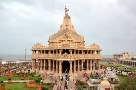 |
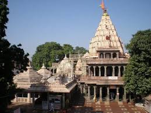 |
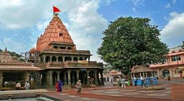 |
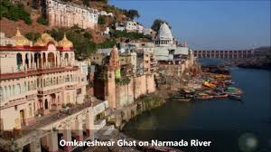 |
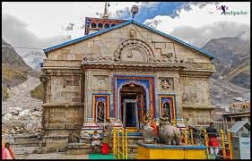 |
|---|
| Somnath,Prabhas Patan, near Veraval, Gujarat |
Mallikarjuna Swamy,Srisailam, Andhra Pradesh |
Mahakaleshwar,Ujjain, Madhya Pradesh |
Omkareshwar,near Indore, Madhya Pradesh |
Kedarnath,Kedarnath, Uttarakhand |
|---|
| 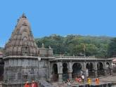 |
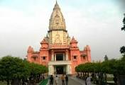 |
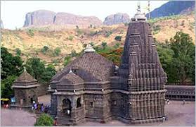 |
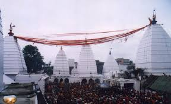 |
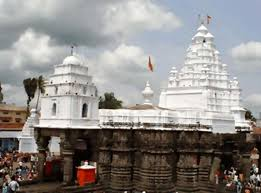 |
|---|
| Bhimashankar,pune,Maharashtra |
Vishwanath Temple,Varanasi,Uttar Pradesh |
Tryambakeshwar,Nashik,Maharashtra |
Vaidyanath Jyotirlinga,Deoghar, Jharkhand |
Aundha Nagnath,Hingoli,Maharashtra |
|---|
| 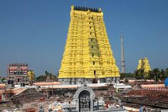 |
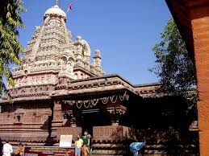 |
|---|
| Rameshwar,Rameshwaram,Tamil Nadu |
Ghrishneshwar,Verul near Ellora Aurangabad,Maharashtra |
Lord Shiva was known as the destroyer of evil.
He couldn't tolerate injustice and destroyed the evil rakshasas in a fair manner.
Similarly, even we should try to keep zero tolerance for the evil happening around us and take a stand against injustice.
|